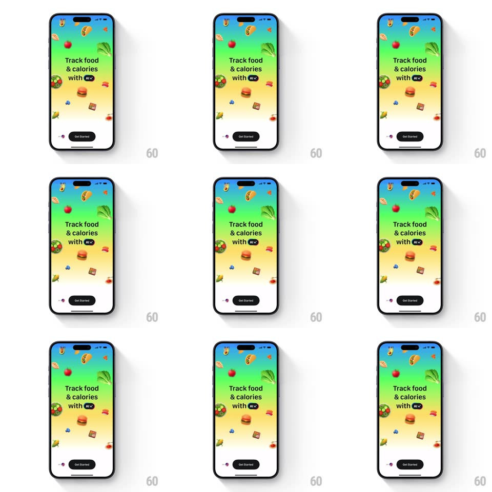

Media
Frame-by-frame

Rebuild this animation 1:1: Foodllama's onboarding intro - food icons float and drift in a slow idle dance over a blue-to-yellow gradient behind the "Track food & calories with AI" headline.

Rebuild this animation 1:1: Foodllama's onboarding intro - food icons float and drift in a slow idle dance over a blue-to-yellow gradient behind the "Track food & calories with AI" headline. ## Integration Integration: stack-agnostic spec - springs given as stiffness/damping, timed motions as duration + curve; map every value to your framework and animation library of choice. ## Scene Full-screen vertical gradient (blue top through green to yellow bottom): scattered food illustrations (hot dog, apple, broccoli, burger, salad bowl, sushi, candy), centered headline "Track food & calories" with an "AI" sparkle chip on "with", and a black "Get Started" pill at the bottom. ## Motion spec Pattern: idle floating icon field. - Intro: icons pop in scattered (scale 0 -> 1, spring ~440/18, 40ms stagger), headline fades up (300ms), then the pill (250ms). - Idle: each icon drifts on its own slow path (translate +-12px and rotate +-8deg, period 3-5s, ease-in-out, phase-offset per icon) - a gentle bob-and-sway with no two icons in sync. - Depth: larger icons drift slower and dimmer ones sit behind the headline layer. - The gradient, headline, and pill are static; only the icons move. ## Calibration - Drift amplitude stays small - this is ambience, not a parade. - Each icon's loop is phase-offset so the field never aligns. ## Reduced motion Static icons in their final positions. ## Don't miss - Icons pass both in front of and behind the headline - keep the layering. - The "AI" chip is part of the headline, not a floating icon.